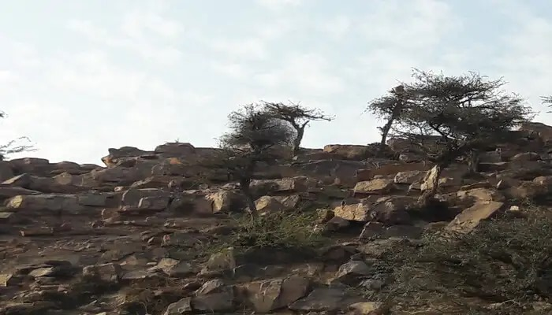
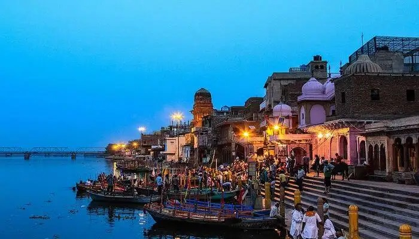
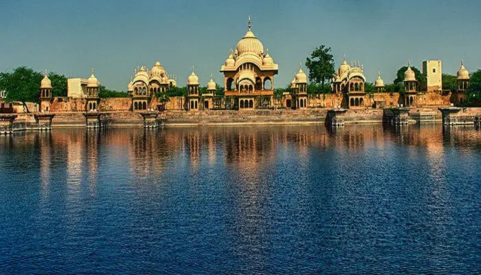
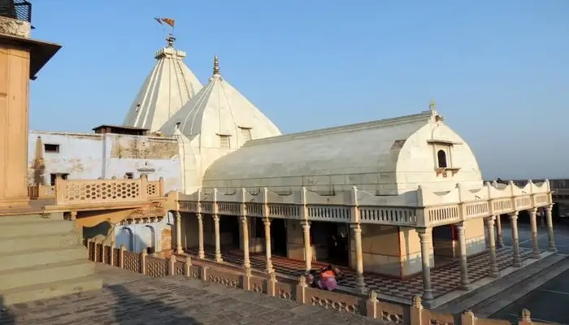
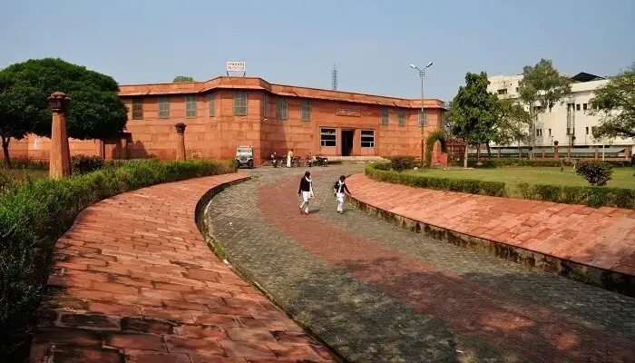
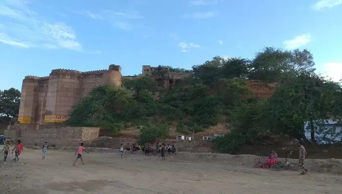

Our Recommendation
Top 7 Must Places to Visit
1.Govardhan hill

Around 50 km from Mathura, NandGaon is a quaint town situated in the Nandishwara Hills. It is the home to Krishnaji’s adopted parents – Nand Ji and Yashoda Maiyya. There are many temples situated on the top of this hill. Other popular temples here are Nritya Gopal, Nand Nandan, Udhav Kyaro and Gopinath. There is a beautiful lake here called the Pan Sarovar that is much loved by tourists also making it one of the best things to see in Mathura.
2.Vishram Ghat

Another one of the best sightseeing places in Mathura is Vishram Ghat. On the banks of the River Yamuna, a sacred ghar located about 5km from Mathura, which is the center to 25 ghats. There is a parikrama that pilgrims take around the ghat. Literally translating to a place of relaxation, Lord Krishna rested at this place after killing the evil demon, Kansa. There is a heavy crowd around the ghat during Bhaidooj for the holy dip. People can also take a boat ride at the ghat.
3.Kusum Sarovar

A beautiful reservoir made of sandstone and a true remnant of the bygone era, the Kusum Sarovar has a flight of stairs that descend into the pond. According to folklore, the reservoir got its name from one of Radha’s dasis, Kusum. It is a great place for taking a dip during summers. One can also find many temples in its vicinity and around it during their trip to Mathura and Vrindavan. The emerald green water is cool and the pond has a floral border, boasting different flowers. It is believed that Radha collected these flowers to make garlands and floral jewelry for herself. Perfect for quiet evenings, you can watch
4.Nand Baba Mandir

Govardhan Hill, stretching from Radha Kund to south of Govardhan, is a long ridge that, at its highest, stands 100 feet (30 m) above the surrounding land. At the southern end of the hill is the village of Punchari, while at the crest stand the villages of Aanyor and Jatipura.[6] The parikarma path of Govardhan hill is intersected by some part of district Deeg of State of Rajasthan
5.Mathura Museum

Previously known as the Curzon Museum of Archaeology, the Government Museum in Mathura is situated at the Dampier Park. The local people simply like to call it the Mathura Museum, and never get tired of acknowledging that it is one of the finest museums in the country housing an enormous collection of ancient relics, sculptures, coins, and paintings. Other than historical relics and artifacts, what makes it one of the most respected Mathura destinations is its display of discoveries made by celebrated archaeologists in and around Mathura
6.Kans Qila

Nestled on the banks of the Yamuna River, the majestic Kans Qila is an ancient fortress and one of the best places to visit in Mathura in night. As the name suggests, it is dedicated to Kans – Lord Krishna’s maternal uncle. Located close to the Krishna Ganga Ghat and Gau Ghat, this huge fort serves as a popular tourist spot attracting a large number of travelers every month with its Hindu-Muslim fusion architecture. Even though it’s in a dilapidated state today, Kans Qila doesn’t fail to attract history geeks and architecture lovers from across the country. Given its history and charm the places contributes a lot to tourism in Mathura.
7.ISKON Temple
In the vein of other temples made by the society, Sri Krishna Balrama Mandir is too called as Iskcon Temple all over. After the original construction, the temple complex has extended evidently, to accomplish the vision of Swami Prabhupada, for an international center in Vrindavan. The temple stands on the banks of Yamuna River, where Sri Krishna along with Balrama used to herd their cows. The magnificent structure of the Iskcon Temple comes across the sight, as and when, one enters the holy lands of Vrindavan.
8.Radha Kund